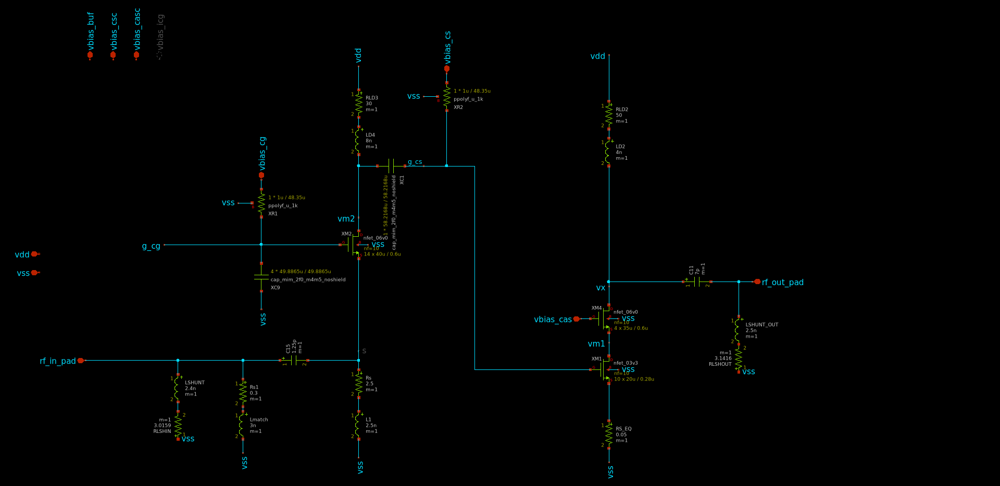
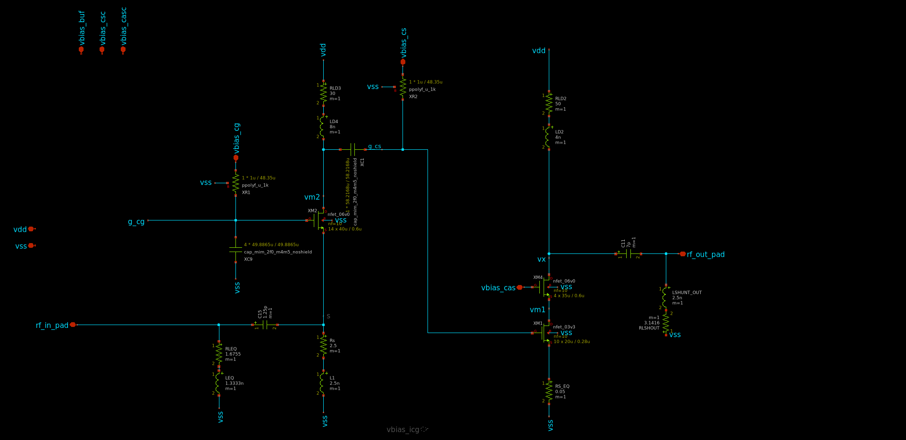
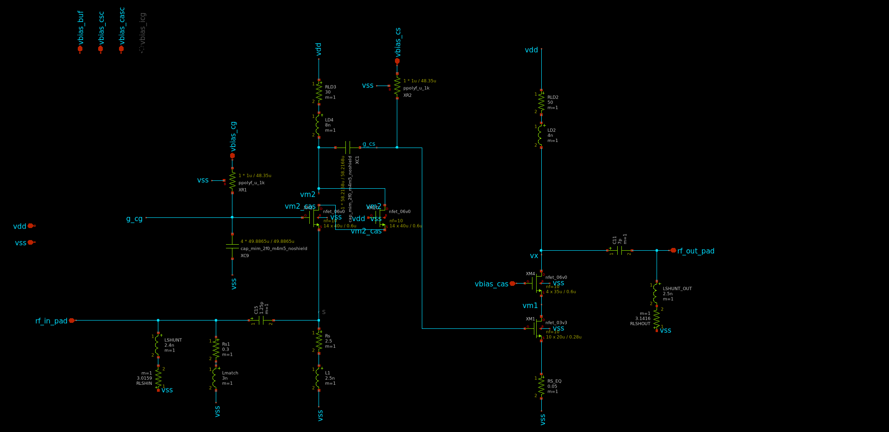

A walkthrough of the branch's three design points — the adopted CG-tank baseline, a tested single-inductor input simplification, and a cascode experiment — each simulated against the real PEX-extracted pad netlist (same convention used across every topology in this project). All numbers below are at 2.4 GHz unless noted.

The CG input stage (M2) is matched with two separate branches — a shunt inductor+resistor (LSHUNT/Rs1) and a series match inductor (Lmatch) — plus the established LD4(8nH)/RLD3(30Ω) shunt-peaking load on the CG drain.

LSHUNT and Lmatch merged into one equivalent inductor Leq, dropping one component from the input network while re-matching at 2.4 GHz against the same pad.

A cascode device M2C stacked on M2's drain, gate tied to vdd (a free AC ground in this testbench). Motivation was better reverse isolation; S12 did improve substantially — isolation was never the bottleneck here.
| Variant | S11 (dB) | S21 (dB) | S22 (dB) | NF (dB) | Matched BW¹ |
|---|
¹ Matched bandwidth = contiguous band where S11 ≤ −10 dB, S22 ≤ −10 dB and S21 ≥ 10 dB simultaneously hold, from the swept data below. Deltas shown are vs. the primary (adopted) baseline.
The original two-branch input (LSHUNT/Rs1 + Lmatch) with the LD4/RLD3 CG-tank load remains the best-performing dev_ilir_pexmatched configuration against the real PEX pad: S11 ≈ −23.1 dB, S21 ≈ 18.0 dB, NF ≈ 2.49 dB at 2.4 GHz, with the widest matched bandwidth of the three (≈394 MHz, 16.8%).